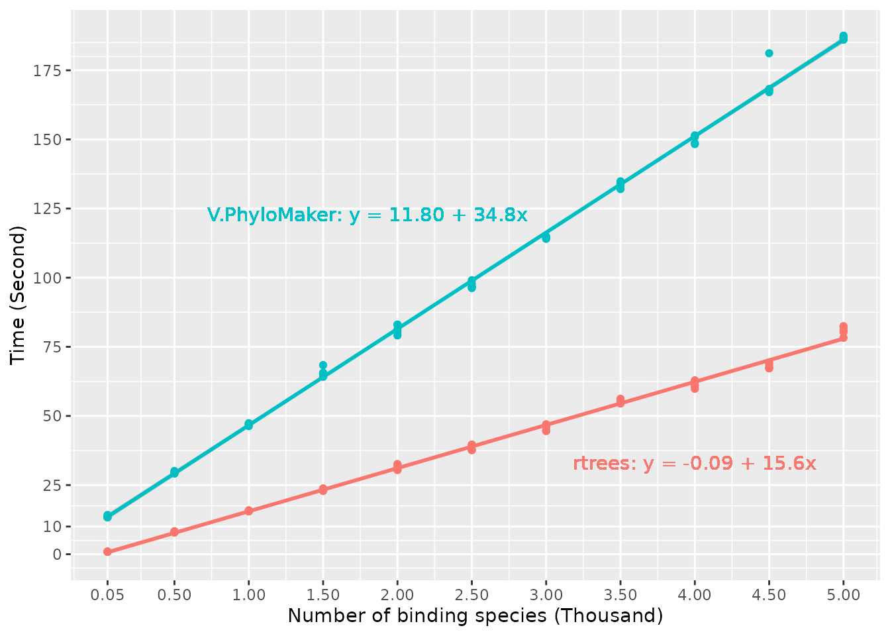

Speed comparisons
speed.RmdHere, I compared the performance of rtrees (v1.0.0) and
V.PhyloMaker (v0.1.0) (V.PhyloMaker2 has
almost the same speed as V.PhyloMaker, so no comparisons
here). In most cases, rtrees is at least two times faster
than V.PhyloMaker (Fig. below). For example, with 50
missing species to bind, the average time used by rtrees is
0.914 second while V.PhyloMaker took 13.6 seconds on
average; with 5,000 missing species to bind, rtrees used
80.9 seconds on average while V.PhyloMaker used 187
seconds. In general, the time used by rtrees and
V.PhyloMaker increased 15.6 and 34.8 seconds on average
with 1,000 more missing species to be grafted, respectively. All tests
were conducted on a 14’ Macbook Pro with M1 pro chip.
Some may not think it is a big difference. However, for me as a user, waiting for more than 10 seconds to have about 50 species grafted is not ideal. Also the accumulated time can be large if one is doing this multiple times (e.g., doing some simulations that require thousands of iterations).
The R code used for the speed tests can be found here.
if(!require("ggplot2")) install.packages("ggplot2")
#> Loading required package: ggplot2
library(ggplot2)
# library(broom)
temf = tempfile()
download.file("https://raw.githubusercontent.com/daijiang/rtrees_ms/main/Data/rtrees_speed_out.rds",
destfile = temf)
speed_out = readRDS(temf)
speed_out = dplyr::mutate(speed_out, n_sp_missing_k = n_sp_missing / 1000, time_s = time/1e9)
# speed_lm = dplyr::group_by(speed_out, expr) |>
# dplyr::do(broom::tidy(lm(time_s ~ n_sp_missing_k, data = .))) |>
# dplyr::ungroup()
ggplot(speed_out, aes(x = n_sp_missing_k, y = time_s, color = expr, group = expr)) +
geom_point() +
geom_smooth(method = "lm") +
labs(x = "Number of binding species (Thousand)",
y = "Time (Second)", color = NULL, group = NULL) +
scale_x_continuous(breaks = c(0.05, seq(0.5, 5, 0.5))) +
scale_y_continuous(breaks = c(0, 10, seq(25, 200, 25))) +
geom_text(x = 4, y = 33, label = "rtrees: y = -0.09 + 15.6x", inherit.aes = FALSE, color = "#F8766D") +
geom_text(x = 1.8, y = 123, label = "V.PhyloMaker: y = 11.80 + 34.8x", inherit.aes = FALSE, color = "#00BFC4") +
theme(legend.position = "none")
#> `geom_smooth()` using formula = 'y ~ x'